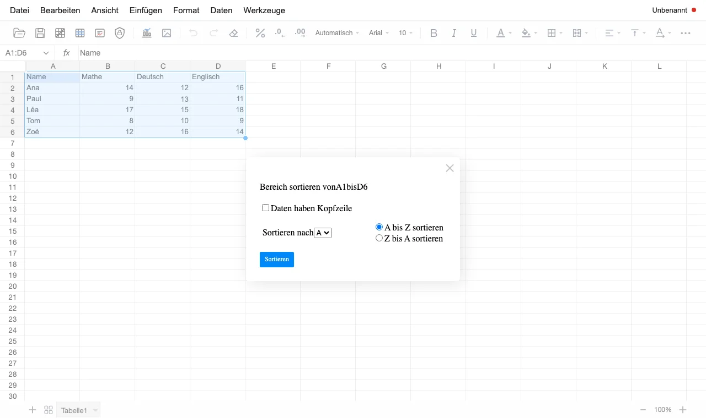
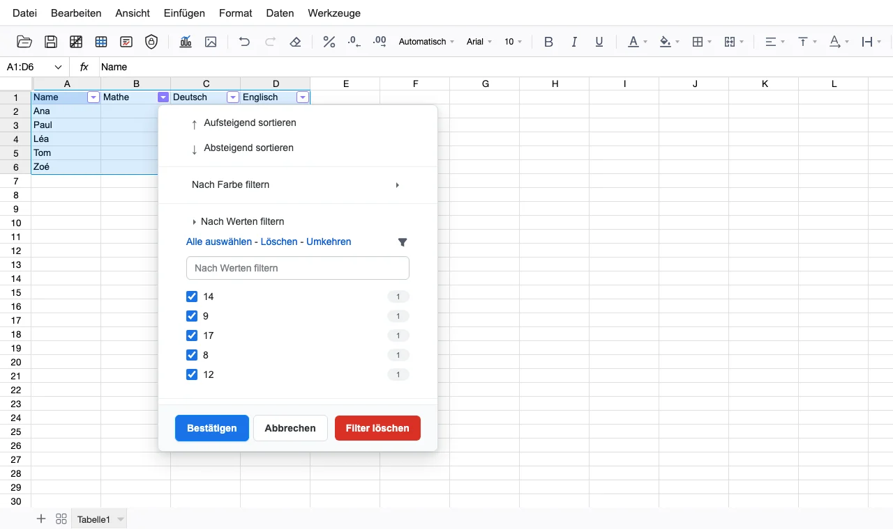
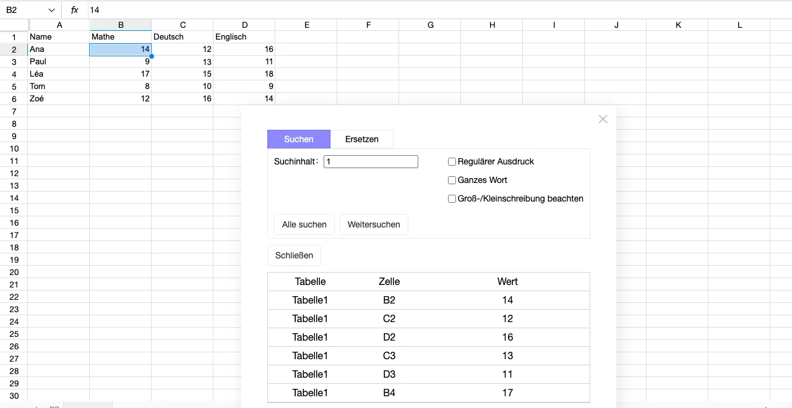

Sortieren, filtern, suchen
Sortieren
| Befehl | Wirkung |
|---|---|
| Daten › Sortieren und filtern › A bis Z sortieren, Z bis A sortieren | sortiert die Auswahl nach ihrer ersten Spalte; auch mit und per Rechtsklick |
| Rechtsklick › Auswahl sortieren | wählt die Sortierspalte, die Reihenfolge und ob die erste Zeile eine Kopfzeile ist |

Die ganze Tabelle auswählen, nicht eine einzelne Spalte: die Zeilen müssen vollständig bleiben. Ein Bereich mit verbundenen Zellen lässt sich nicht sortieren.
Filtern
- Die Tabelle samt Kopfzeile auswählen.
- Daten › Sortieren und filtern › Filter erstellen oder oder Rechtsklick › Auswahl filtern.
- Den Pfeil einer Spalte anklicken.

| Im Menü einer Spalte | Wirkung |
|---|---|
| Aufsteigend sortieren, Absteigend sortieren | sortiert die Zeilen der Tabelle |
| Nach Farbe filtern | nach Hintergrund- oder Textfarbe |
| Nach Werten filtern | die zu behaltenden Werte ankreuzen; Alle auswählen, Löschen, Umkehren; das Feld sucht einen Wert |
| Bestätigen | wendet an |
| Filter löschen | entfernt den Filter der Tabelle |
Ausgeschlossene Zeilen werden ausgeblendet, nicht gelöscht. Die Filter mehrerer Spalten wirken zusammen. Daten › Sortieren und filtern › Filter löschen entfernt den Filter.
Suchen, ersetzen
Strg F öffnet Suchen, Strg H Ersetzen.

| Option | Wirkung |
|---|---|
| Regulärer Ausdruck | der gesuchte Text ist ein regulärer Ausdruck: ^A findet, was mit A beginnt |
| Ganzes Wort | die ganze Zelle ist gleich dem Text |
| Groß-/Kleinschreibung beachten | unterscheidet Groß- und Kleinbuchstaben |
| Alle suchen | listet die gefundenen Zellen auf; ein Klick auf eine Zeile führt hin |
| Weitersuchen | geht zur nächsten |
| Ersetzen, Alle ersetzen | eine Zelle, alle |
Gesucht wird im angezeigten Blatt.